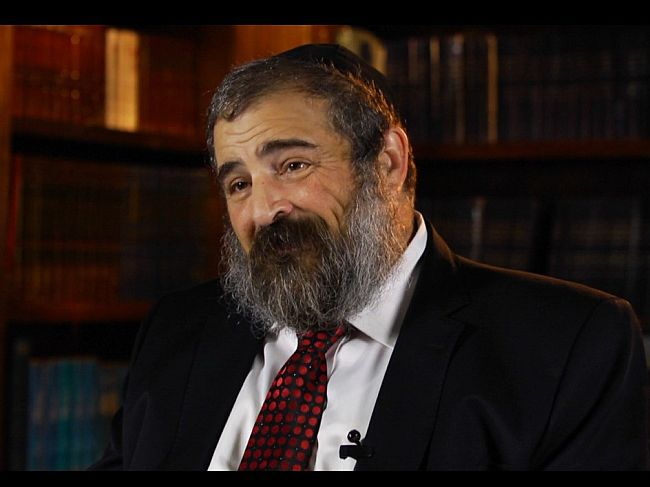

קווים לדמותו של הרב יהושע בנימין גורדון ע”ה – שליח נמרץ ופעלתן שלא הפסיק להבריק
קווים לדמותו של הרב יהושע בנימין גורדון ע”ה – שליח נמרץ ופעלתן שלא הפסיק להבריק עם מיזמים פורצי דרך ובארבעים שנות שליחות הצליח לחולל מהפכה רוחנית בלתי נתפסת בקרב אלפי יהודים בקליפורניה ודרך הרשת המקוונת – בעולם כולו
קווים לדמותו של הרב יהושע בנימין גורדון ע”ה – שליח נמרץ ופעלתן שלא הפסיק להבריק עם מיזמים פורצי דרך ובארבעים שנות שליחות הצליח לחולל מהפכה רוחנית בלתי נתפסת בקרב אלפי יהודים בקליפורניה ודרך הרשת המקוונת – בעולם כולו * מאת יעקב פישמן

ה’מוטו’ לחיים, ביחידות בגיל 16
הרב גורדון נולד ביו”ד תמוז תש”ט לאביו השליח הרב שלום דובער גורדון, ובהיותו בגיל שלוש זכה שהרבי יחתוך את שערותיו הראשונות. לאחר שהרבי גזז את שערותיו, אמר הרבי שיכבדו גם את שאר הנוכחים, ולכל לראש - את הכהנים, כיון שגזיזת השערות הוא בדוגמת “ראשית הגז”, א’ מכ”ד מתנות כהונה.
בהיותו תלמיד בישיבה, נכנס כנהוג בשנים ההן, ליחידות לקראת יום ההולדת שלו. בהיותו בגיל 16 התלבט מה לעשות בחודשי הקיץ - האם להיות מדריך בקעמפ, או להשאר בישיבה ולשגשג בלימודיו. הוא שאל על כך את הרבי בהיותו ביחידות, והרבי השיב שעליו להיות מדריך בקעמפ, והוסיף שעל ידי הפעילות עם הזולת “נעשים ליבו ומוחו זכים אלף פעמים ככה”. כמה שבועות אחר–כך הזכיר הרבי בהתוועדות הוראה זו, והבהיר שהכוונה כפשוטם של דברים - שכאשר עוסקים עם הזולת, הרי אפשר להשיג בשעה אחת מה שאדם אחר זקוק לאלף שעות כדי להבין!
לימים העיד הרב גורדון שהוראה זו הייתה ל’מוטו’ המרכזי בחייו, ומה שדחף אותו להשקיע בשיעורי תורה לרבים.
בשליחות הרבי לוואלי
בשנת תשל”ג יצא הרב גורדון עם רעייתו תבלח”ט הגב’ דבורה לשליחות, והיו מראשוני השלוחים של הרבי בלוס אנג’לס לצד השליח הרב שלמה קונין.
בתחילת עבודתו כשליח בוואלי, קיבל מכתב מהרבי, בו היה משפט עמו ‘חי’ הרב גורדון בכל שנות שליחות: “לעבוד במרץ, וביטחון חזק”.
הודות לעשייה עקבית ומתמשכת תוך היכרות אישית עם יהודים רבים מכל האזור, בית חב”ד הקטן שהקימו הזוג גורדון, הפך במשך השנים למעצמה של ממש והוביל להקמתם של מעל עשרים ושישה (!) בתי חב”ד בכל הוואלי [העמק] של ס. פרננדו בלוס אנג’לס.
עם התמסדות בית חב”ד, החל הרב גורדון לבנות ולפתח רשת של בתי כנסת, מקוואות טהרה, כיתות לימוד למבוגרים, תוכניות לחגי ישראל, בתי–ספר ללימודי קודש, קייטנות ומסגרות שונות לבני נוער ומגוון פעילויות חינוכיות.
מענה הרבי שחסך 100,000 דולר
את אחד המרכזים החב”דיים פתח הרב גורדון בשכונת Encino , ובעקבות התגובות החיוביות מתושבי המקום, החליט לבנות במקום את בית חב”ד המרכזי בוואלי. הוא שם את עיניו על בניין בית ספר סמוך וביקש לרכוש אותו כדי להרחיב את הפעילות, אולם כאשר שאל על כך את הרבי, נענה שלא לרכוש את הבניין, ולהתייעץ עם אנשי נדל”ן וידידי חב”ד מקומיים.
לאחר התייעצות עם מומחים בתחום, הבין כי המחיר שנדרש לשלם על הבנין היה מופקע. בעלי הבניין דרשו אז בסביבות 340 אלף דולר, שהיה סכום גדול בראשית שנות המ”מים.
כעבור כמה שנים התחולל מיתון באזור, ומחיר הנכס ירד ל–280 אלף דולר. בית חב”ד הציע לבעלי הנכס 240 אלף, והם הסכימו. כמובן שהרב גורדון שאל שוב את הרבי, ונענה שהפעם זה רעיון טוב. כך בזכות הציות להוראות הרבי, חסך הרב גורדון מאה אלף דולר!
הבנין קום יקום. עם עזרתכם, או בלעדיה.
כדי להתחיל בבניית המרכז, הגיש הרב גורדון בקשה למענק מהפדרציה היהודית, ונפגש עם חברי הוועד. כאשר הם שמעו שעד עתה השיג התחייבות לתרומות בסך חמישים אלף דולר בלבד - הם לא האמינו שיצליח להתקדם בפרוייקט, ואמרו לו: הרב גורדון, זה לא הולך לקרות…
הרב גורדון, שהיה בטוח בברכתו של הרבי, אמר להם: רבותיי, הרבי מליובאוויטש נתן לי את ברכתו, והמרכז הזה קום יקום. עם עזרתכם, או בלי עזרתכם!
הם לא האמינו שהוא יבנה, אבל הסכימו להעניק 25 אלף דולר עבור הארכיטקט. בסופו של דבר, כמובן, הרב גורדון הצליח להשלים את בניית המרכז, שהיה לאחד מבתי חב”ד הגדולים ביותר בזמנו, עם בניין בגודל 22 אלף רגל מרובע!
המוטיבציה למסירת שיעורים
בגין הצלחתו המשגשגת בביסוס הקהילה היהודית בשליחותו של הרבי מלך המשיח, הפך הרב גורדון מודל לחיקוי עבור רבים מאחיו השלוחים שלמדו רבות מדרכי הפעולה שלו והחשיבה החדה שגילה בניתוב האנרגיה בשליחות למיזמים מהפכניים ומקוריים.
כך הצליח לפעול גם על יהודים הרחק מקליפורניה. בשנים האחרונות נודע הרב גורדון בתור מרצה בעל כישרון הסברה נפלא ורבם האישי של אלפי אנשים שנהנו משיעוריו היומיים על חומש עם רש”י, בספר התניא ועל משנה תורה של הרמב”ם, שהעביר באמצעות הרשת המקוונת.
שפתו הקולחת, הצלולה והבהירה לצד הסבריו המדויקים ששפעו במשלי חז”ל, סיפורי חסידים ודוגמאות מחוויות החיים, הביאו את מעיינות חכמת התורה ואת תענוג לימוד התורה לסטודנטים יהודיים ברחבי העולם, שהתחברו לראשונה בחייהם לדרך ישראל סבא בזכות שיעוריו.
אחד מני רבים שמדי יום הקפיד להצטרף לשיעוריו היומיים של הרב גורדון, הוא יהודי המתגורר בעיירת סקון–נקון במדינת תאילנד, בשם זבולון ברואר, חקלאי אורז: “אני אסיר תודה לרב גורדון שלימד אותי תורה. התחברתי במיוחד לסבלנות שנשקפה מבעד לפרשנויות ולהסברים של מושגים מופשטים, מלוות בהומור צנוע שהעבירו לנו את התוכן בצורה הטובה ביותר”.
רבים מהפנינים אותם חלק הרב גורדון עם קהל תלמידיו, שמע באופן אישי מבני המשפחה המפוארת שלו, ביניהם הסבים שלו, מצד אביו הרב יוחנן גורדון, שכיהן כגבאי הראשי בבית מדרשו של הרבי 770 במשך שנים רבות, וסבו מצד אמו הרב אליהו (ייאכיל) סימפסון שהיה מהחוזרים אצל הרבי הרש”ב וכיהן כגבאי אצל הרבי הריי”צ.
בהזדמנות מסוימת נשאל הרב גורדון מאין לו המוטיבציה והחיות המיוחדת ללמד ולמסור שיעורים, השיב כי אביו השליח הרב שלום בער גורדון ע”ה, השריש לו זאת בדנ”א:
“כל יום, במשך קרוב ל–60 שנים, אבי זכרונו לברכה לימד שיעור קבוע בבית הכנסת שלו בניו ג’רזי, וזה משהו שהוא לימד את ילדיו לעשות גם כן. בשיעורו היומי בבוקר, אבי נהג ללמד משניות ובמשך שנים רבות, הספיק להשלים את כל ששת סדרי משנה פעמים רבות. לעיתים יצא שהוא למד רק עם שניים או שלושה אנשים, ולפעמים עם מניין או מניין וחצי; זה לא שינה אצלו דבר. כל בוקר התייצב ללמוד וללמד”.
“תארו לעצמכם אם האינטרנט היה נגיש אז כפי שהוא עכשיו, העולם כולו היה יכול ללמוד אצלו”, הוסיף.
כשנשאל איך שליח כמוהו ששקוע בים של טרדות כרב קהילה ומנהל מוסדות, מוצא על בסיס יומי, את הזמן להכין ביסודיות שיעורים המוקלטים ומועברים לעולם כולו, אמר הרב גורדון:
“זוהי המתנה הטיפולית הטובה ביותר שיכולתי לפרגן לעצמי. בכל שעות היממה מחשבות רבות צפות ומתרוצצות במוחי על הסוגיות הבוערות שעומדות על הפרק. אך כאשר אני מכין שיעור, ובמיוחד כאשר אני מלמד, ואני יודע שזה יופץ בכל מקום ואני צריך לעשות את זה נכון, זה מה שדוחף אותי להתמקד ולהתרכז בהכנת השיעור בצורה אבסלוטית, במאה אחוז. הוא אשר אמרתי, זה הזמן הכי רגוע שלי מכל שעות היממה…”.
נדמה להם שהמצב - א געוואלד
על מענה מיוחד שקיבל מהרבי, סיפר הרב גורדון:
“בשנת תשמ”ה עמדנו בפני אתגר גדול ומעיק בחיינו. הפרטים לא חשובים, רק אומר שעמדנו בפני שוקת שבורה ולא היה לנו מושג מה עלינו לעשות. להיכן שפנינו - נתקלנו בחומות וחסמים. בשלב מסויים, אשתי ישבה לכתוב על כך לרבי, ומילאה עשרה עמודים עם פרטי הבעייה.
“כעבור זמן קצר קיבלתי טלפון ממזכירות הרבי. על הקו היה הרב גרונר, שאמר: יש לך עיפרון? תרשום את תשובת הרבי: ‘כמה וכמה פעמים בעבודתם הקדושה נדמה להם שהמצב א געוואלד, ונהפך לטוב הנראה והנגלה. ויתייעצו כנ”ל. ויקיימו הציוויי ‘טראכט גוט וועט זיין גוט’, ויבשרו טוב. אזכיר על הציון”.
“מה שהרבי כתב “ויתייעצו כנ”ל” - כוונתו הייתה להוראה שקיבלנו כמה פעמים בעבר, להתייעץ עם עסקני אנ”ש שבקליפורניה, או עם עסקני אנ”ש שעל אתר. בהתאם לכך, נסעתי עם אשתי ללוס אנג’לס, לפגישה עם הרב שלמה קונין, והרב שמואל דוד רייטשיק. הרב קונין, שבדרך כלל יודע לפתור בעיות קשות, אמר לי בכנות שהוא אינו יודע מה לעשות במקרה כזה. ואילו הרב רייטשיק השיב לי במענה הכי סטנדרטי ואופייני לו: ‘הקדוש ברוך הוא בוודאי יעזור לך!’.
“אחרי הפגישה איתם, חזרנו לביתנו בוואלי, כאשר הבעייה בעינה עומדת. אך באותו לילה, או בלילה שלמחרת, קיבלנו טלפון מהמקור הכי לא צפוי שיכול להיות, ובאותה שיחת טלפון נפתרה כל הבעייה! ראינו בחוש כיצד כאשר ממלאים את הוראת הרבי - כל הבעיות נפתרות!”.
•
במשך תקופה ארוכה התייסר ממחלה קשה, וביום שני כ”ט שבט, השיב את נשמתו ליוצרה והוא רק בן שישים ושש.
הותיר אחריו את אשתו תלבחט”א הרבנית דבורה גורדון, וילדיהם: הרב יוסי גורדון, הרב יוחנן גורדון, הגב’ פייגי הרצוג, הרב אלי’ גורדון, הגב’ דינה רבין, הגב’ חיה מושקא דרייזין, המתגוררים ונמצאים בשליחות ברחבי מדינת קליפורניה.
ויהי רצון שיקויים הייעוד “והקיצו ורננו שוכני עפר” והוא בתוכם, בהתגלות הרבי מלך המשיח תיכף ומיד ממש.